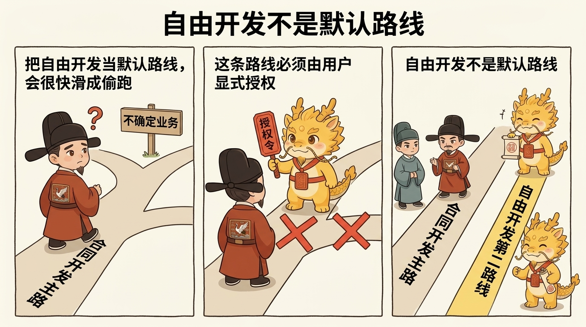
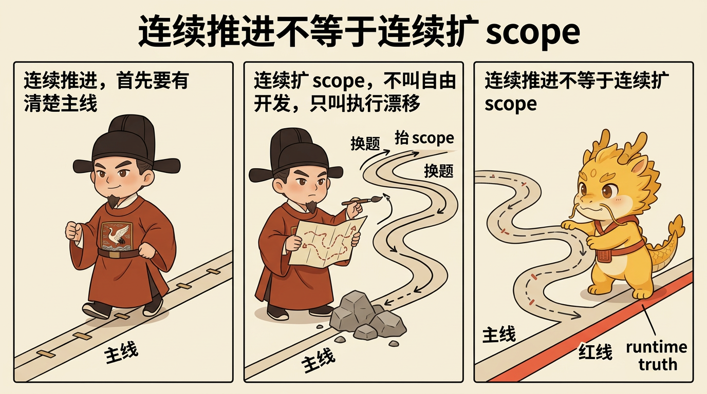

治理扩展、吞吐补偿与边界
自由开发模式：在不确定业务中继续可控推进

自由开发模式：在不确定业务中继续可控推进
目录
这页解决什么问题
这页只回答一个问题：
当业务本身还带着很多不确定性，探马已经不够、但又不能放弃治理时，怎么继续长时推进。
很多深水区任务都会卡在这里：
- 你已经不是完全不知道前面真假
- 但也还远远没到可以把后面每一步都写成稳定合同
- 如果强行假装自己全知道，计划会变成假确定性
- 如果直接放飞去写，又会很快滑回黑盒乱冲
自由开发模式 要解决的，就是这段中间地带。
最短定义
最短可以把它定义成一句话：
在显式主线、显式红线、显式 runtime truth 的前提下，允许一段连续、可控、可追责的长时开发。
所以它不是“别问了我先做”，而是：
- 主线先说清
- 反路线先说清
- 假方法和毒方法先钉死
- 然后才允许连续推进
它不是默认路线
自由开发模式 不是默认路线，也不能自动开启。

它只在用户显式授权后才成立，例如：
开启自由开发模式进入自由开发自由长时开发模式
如果没有这层显式授权，默认还是先走合同开发：
approval-first-plannerapproved-checklist-executor
所以它不是把老路线废掉，而是在高不确定业务面前多出第二条官方执行路线。
它和探马是什么关系
自由开发模式 不是探马的对立面，而是探马之后的一种可控延伸。

探马负责做的，是先把最前面那层真假压缩出来。
只有当：
- 最前面的真实 blocker 已被压缩到足够小
- 当前主线已经明确
- 剩余不确定性更像业务推进中的连续探索，而不是最前面的纯黑盒未知
这时才值得从探马切到自由开发。
所以更准确地说：
- 探马负责先逼出第一手真相
- 自由开发负责在这份真相上连续推进
它到底在保护什么
第一，保护主线
自由开发不是“想到哪做到哪”，而是先声明当前 mainline，再沿着这条线持续推进。
如果一条路线已经说不清自己在服务哪条主线，那它就已经不是自由开发，而是执行漂移。
第二，保护 runtime truth
自由开发越长时，越不能只靠口头维持当前真相。
所以它必须继续保住：
dev_repo/state.jsondev_repo/journal.jsonldev_repo/evidence_index.jsondev_repo/tree.md
也就是说，自由开发不是把合同树取消，而是让合同树在连续推进里继续活着。
第三，保护红线
自由开发允许减少重复 ceremony，但不允许放松红线。
它仍然要求：
- 一步一提交
- 有证据才算推进
- 长命令至少三分钟一次进度更新
- 停止时必须能诚实写出
blocker_class / stop_reason / next_exact_action
第四，保护方法洁癖
深水区里最危险的，不只是慢，而是用错方法还继续加速。
所以自由开发会特别强调：
- 不要用 demo path 冒充主路径
- 不要用 CLI 成功冒充产品完成
- 不要用 wrapper 绕开真实框架
- 不要让局部 firefight 静默替代主线
最常见的四种跑偏

第一种：把自由开发理解成取消审批
不是。它取消的是不必要的重复 ceremony，不是取消主线、证据和红线。
第二种：把自由开发理解成不用探马
不是。真正的自由开发，往往恰恰建立在前面的探马已经把最前面的真假压出来。
第三种：一进入自由开发，就把 dev_repo 放掉
这会让当前真相重新蒸发回对话，最后你只会得到一段很像进展的叙事。
第四种：把连续推进误写成连续扩 scope
自由开发允许连续推进，不允许遇到阻塞就不停改题、换题、抬 scope。
一句话压轴
自由开发模式真正要守住的，不是“终于可以不写计划了”，而是：
当任务已经复杂到无法假装全知时，仍然要让主线清楚、红线不松、真相落盘，然后再连续推进。
它不是放弃治理，而是把治理从“每一步都重讲一遍”升级成“在 runtime truth 之上持续推进”。